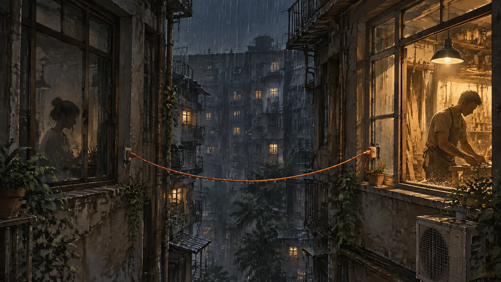
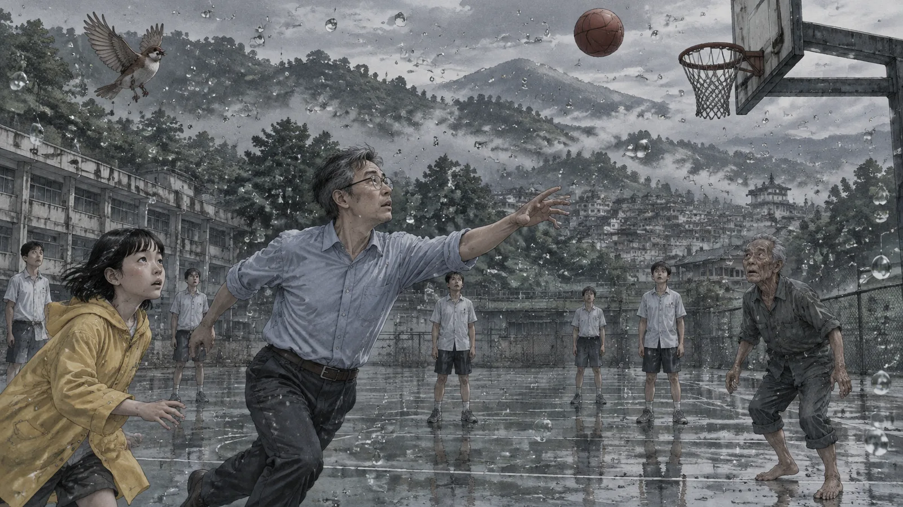
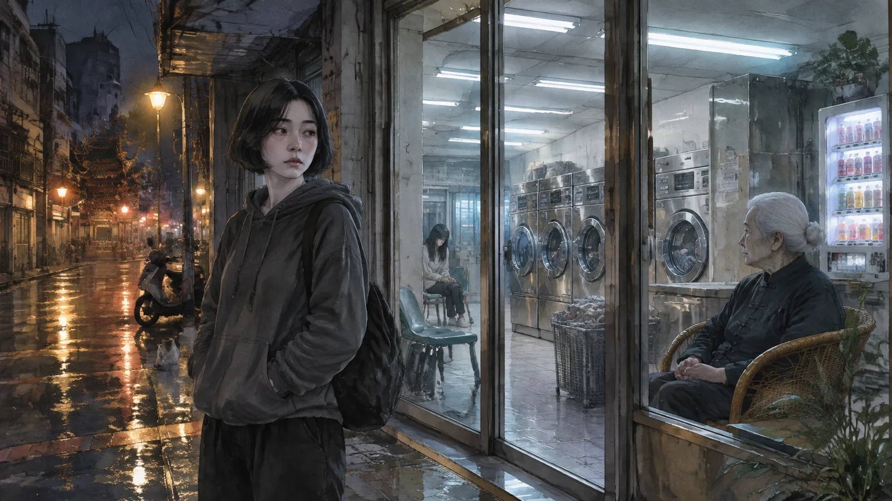
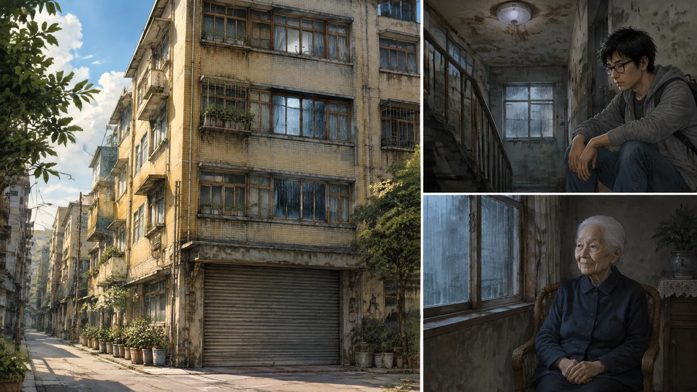
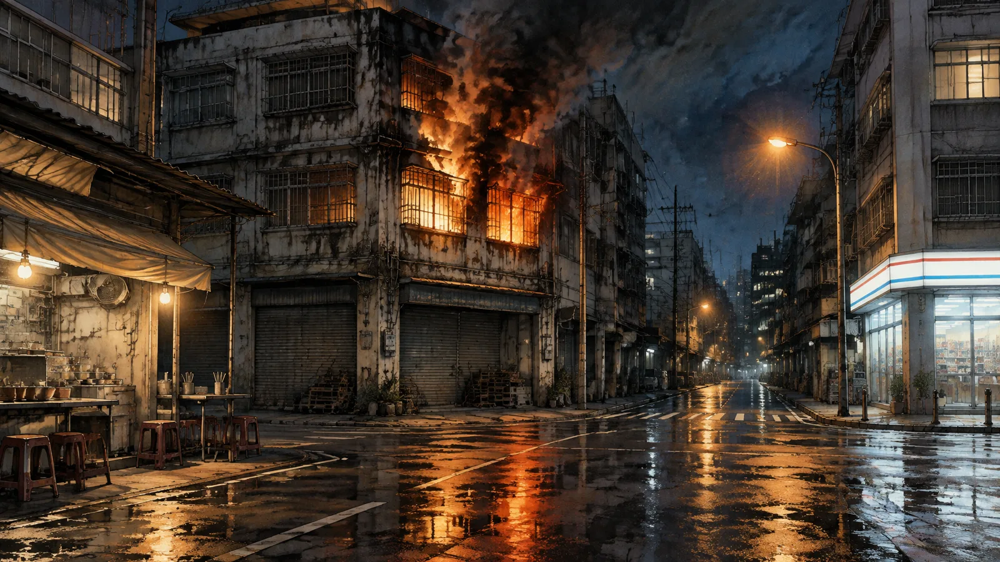
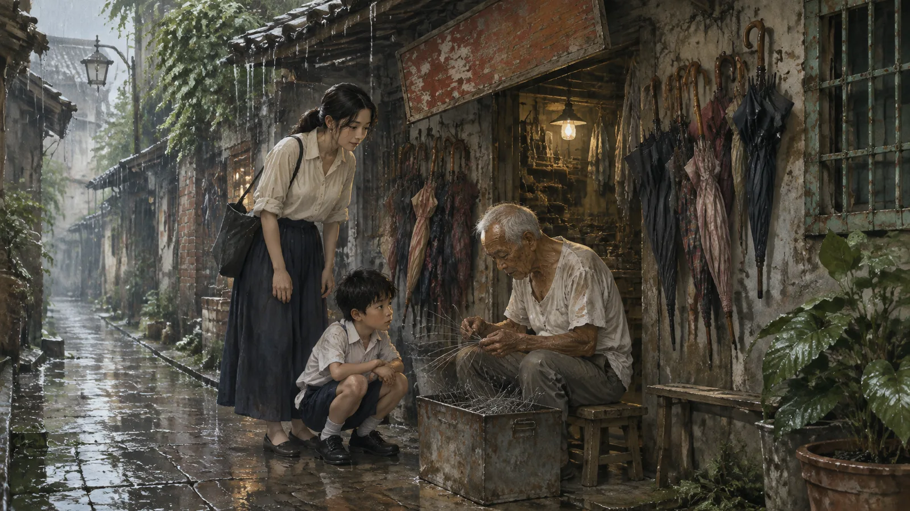

故事書架
半小時、一小時就能讀完的短篇小說，每一篇都有插圖。挑一篇，找個舒服的位置。

半小時借我一點光
颱風夜停電，插畫家蘇晚對著天井另一邊的窗戶喊：「你有沒有延長線？」對面的木工把一條橘色的線丟了過來。從那條線開始，有些東西就再也收不回去了。
 半小時
半小時沉城的廣播
二〇九八年，嘉義東石已經在海底三十九年。守燈站的年輕技師收到一條來自水底十四公尺的訊號：一台老式家用助理，每天早上六點半，還在叫一個人起床。

一小時時間停在三點十七分
苗栗山城的一個星期三下午，鳥停在空中，雨停在半空，三千個人停在同一秒。只有物理老師邱望還在動——而他的太太，正在十二公里外的山路上，看著一台打滑的貨車。

一小時食夢者
萬華一間二十四小時洗衣店的夜班女孩，會吃別人的噩夢。吃了，就要自己走完。規矩有三條——她一直以為只有三條。
鯨魚的夢
一隻抹香鯨在台東的海邊擱淺。一個十一歲的男孩把耳朵貼在牠的皮膚上，然後他睡著了，然後他在海裡，很深，深到沒有光——他在鯨魚的夢裡。

一小時雨季的租屋廣告
一則掛了十一年的租屋廣告，每天凌晨三點三十三分重新刊登一次。中正區老公寓三樓，月租八千。照片永遠是雨天。鞋櫃裡有十一雙鞋，和一個空位。

半小時第七位證人
高雄一棟老印刷廠的深夜大火，一個死者，一份三千萬的保單，六個證詞互相矛盾的證人。火災調查員沈羽知道：火不會說謊，可是人會——而說謊的地方，就是他最在乎的地方。

半小時巷口的修傘人
台南老巷口有一個修了五十三年傘的老人。他修好的傘，會替撐它的人擋掉明天的一件壞事——然後傘會壞，而那件事，總要有人接。
零度的鋼琴師
二〇八九年的台北，記憶可以被冷凍、修改、再植回去。一位八十四歲的鋼琴家走進調音室，只提了一個條件：一個音都不能動。
潮間帶的圖書館
澎湖最西邊的小島，每逢大退潮，潮間帶下會露出一座圖書館。架上的每一本書，都是島民沒有活過的另一種人生。
 半小時
半小時午夜電台
台東一間沒有人聽的電台，每個星期二凌晨一點十四分，都會接到一通點歌電話——點給明天會發生的事。
 半小時
半小時第十三號月台
台北車站沒有第十三號月台。一個夜班調度員、一班只在雨夜出現的列車，和一封放了二十二年沒有寄出的信。
這個組合目前還沒有故事。